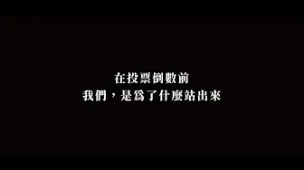
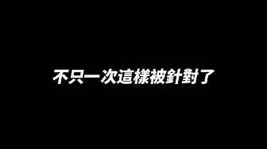

虧雞福來爹 / 林義豐UCAbvXdpn460E7CtcjO7KuJA

這些日子這段時間，豐哥為了什麼而努力？
Accounts
| 平台 | 帳號 | 已收錄貼文 | 最後更新 |
|---|---|---|---|
| 官網 | https://www.xn--btvt94cw3i.com/ | 0 | — |
| https://www.facebook.com/ceotainan/ | 0 | — | |
| https://www.instagram.com/marklin_ceo/ | 0 | — | |
| YouTube | https://www.youtube.com/channel/UCAbvXdpn460E7CtcjO7KuJA | 6 |
Timeline
顯示 6 / 6 則

這些日子這段時間，豐哥為了什麼而努力？
11.25 Crazy Friday全球百大電音趴！【天馬戲創作劇團】最瘋最狂最嗨的音樂節!台南&新營雙主場❗️全部免費入場~

我們不只一次被針對了！
11.25 Crazy Friday！電音趴重磅登場！全球百大DJ亮相！臺南新營雙主場！
虧雞為何要一直舉辦電音趴呢？
鹽水夜市